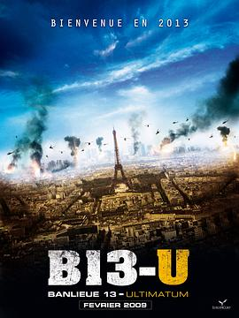

暴力街区13：终极 / Banlieue 13 - Ultimatum
又名：B13-u / Banlieue 13 Ultimatum / District 13: Ultimatum / Ghettogangz 2 - Ultimatum / Ultimate 2: Muscle Never Die / 暴力13街区：终极 / 终极暴力13街区 / 暴力街区14 / 暴力14区 / 终极暴力街区 / 暴力街区2：终极 / 暴力特区2：极限杀阵(台)
就像个科幻片啊……好假
作品信息
| 导演 | 帕特里克·亚力桑德罗 |
| 编剧 | 吕克·贝松 |
| 主演 | 大卫·贝利 / 塞瑞尔·拉菲利 / 菲利普·托雷顿 / 丹尼尔·杜瓦尔 / 艾洛蒂·袁 / Moussa Maaskri |
| 类型 | 动作 / 犯罪 |
| 制片国家/地区 | 法国 |
| 语言 | 法语 / 英语 |
| 上映日期 | 2009-02-18(法国) |
| 片长 | 101分钟 |
| IMDb | tt1247640 |
最后一次看到是 2026-08-12T21:13:02+08:00 · 豆瓣原页